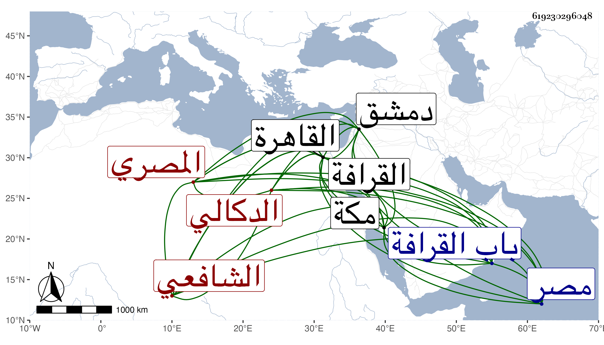

0902Sakhawi.DawLamic.ITO20230111-ara1.EIS1600.619230296048
Biography ID: 619230296048
370
عبد الرحمن بن محمد بن علي بن عبد الواحد بن يوسف بن محمد ابن يحيى بن عبد الرحيم الزين أبو هريرة بن الشمس أبي أمامة الدكالي الأصل المصري الشافعي ويعرف كأبيه بابن النقاش . ولد في ذي الحجة سنة سبع وأربعين وسبعمائة واشتغل بالعلم وحفظ المنهاج وأخذ عن البلقيني والابناسي فمن قبلهما وسمع بالقاهرة من ناصر الدين محمد بن إسماعيل بن الملوك والخلاطي والسنباطي والفخر العسقلاني والبياني فعلى الأول الصحيح بفوت وعلى الثلاثة بعده بعض الدارقطني وعلى الأخير مشيخته تخريج العراقي والزكاة لاسماعيل القاضي وكذا سمع على أبي الحرم القلانسي وآخرين بمكة من محمد بن سالم اليمني وأحمد بن النجم الطبري وبدمشق بعيد الثمانين من غير واحد بطلبه وأجاز له الشهاب المرداوي وابن الخباز وآخرون قال شيخنا في معجمه وولي وهو صغير تداريس تلقاها بعد أبيه وكذا الخطابة بجامع طولون وتكلم على الناس ، وكان جزل الرأي كثير القيام في الحق يصدع بذلك في خطبه ومواعظه عالي الهمة شديد السعي والقيام مع من يقصده محبا في أهل الحديث منخرطا في سلكهم عارفا بأمر دنياه يتكسب غالبا من الزراعة ويبر أصحابه وقد أجاز لأولادي في استدعاء محمد وسمعت من فوائده وكان يودني كثيرا ، وقال غيره أنه درس وحدث وأفتى سنين وكان لوعظه تأثير في النفوس محببا للأكابر محظوظا منهم بل للناس فيه اعتقاد وحسن ظن مع النزاهة والديانة وعظم بأخرة في الدولة واشتهر ذكره . وقال شيخنا في إنبائه واشتهر بصدق اللهجة وجودة الرأي وحسن التذكير والأمر بالمعروف مع الصراحة والصدع بالوعظ في خطبه وصارت له وجاهة عند الخاصة والعامة وانتزع الخطابة المشار إليها من ابن البهاء السبكي فاستمرت معه ، وكان مقتصدا في ملبسه مفضالا على المساكين كثير الاقامة في منزله مقبلا على شأنه عارفا بأمر دينه ودنياه قال وله حكايات مع أهل الظلم وامتحن مرارا ثم ينجو سريعا بعون الله انتهى . وممن أخذ عنه من الحفاظ وغيرهم ابن موسى والزين رضوان والأبي وعرض عليه القضاء بمصر غير مرة فامتنع ، قال المقريزي وكان أمارا بالمعروف نهاء عن المنكر قويا في ذات الله ، وذكره العثماني قاضي صفد في آخر طبقاته فقال شاب حسن معيد الابناسي بمدرسة حسن وخطيب جامع طولون ثم ضرب عليه كأنه لصغره ، وقال ابن قاضي شهبة : كان فقيها متصوفا كثير الحط على الظلمة والمجاهرة لهم بالكلام القبيح ولم يكن في العلم بذاك إذ هو على قاعدة الخطباء ، وكان ينسب إلى اعتقاد الحنابلة في آيات الصفات وأحاديثها ، ومكتوب على قبره بوصية منه :
| بقارعة الطريق جعلت قبري | لأحظى بالترحم من صديق |
| فيا مولى الموالي أنت أولى | برحمة من يموت على الطريق |
ومات في يوم الخميس يوم عيد الأضحى عاشر ذي الحجة سنة تسع عشرة ودفن من الغد خارج باب القرافة على قارعة الطريق بوصية منه بعد أن صلى عليه بمصلى المؤمني في مشهد حافل كان ابتداؤه بالمصلى وانتهاؤه بباب القرافة تقدمهم الجلال البلقيني وصار كل من يمر بقبره يترحم عليه حتى قال بعض الناس كان صاحب حيل في حياته وبعد موته ، وذكره المقريزي في عقوده وساق أبياتا رثاه بها رحمه الله وإيانا .
